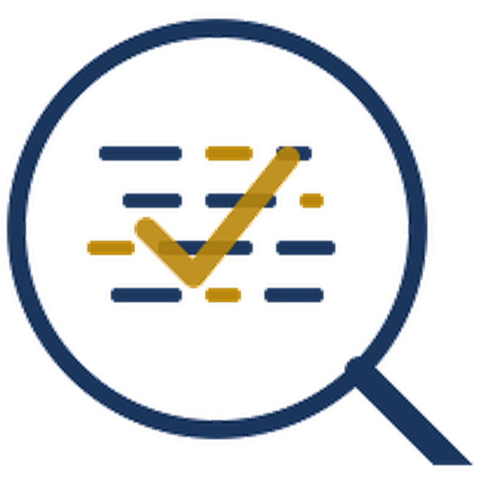

Has run this mandate in miniature. At Citi Internal Audit he defined the AI tooling roadmap for the audit department — use-case intake, risk tiering by criticality, control library, post-deployment monitoring KPIs — and then built and shipped the product on it: a retrieval-augmented Workpaper Quality Assistant in Python and LangChain, specified with the auditors who would use it, in production at ~35% less review cycle time. He also wrote the framework for auditing the firm’s own AI — bias, drift, hallucination, adversarial robustness, third-party models. That framework matters more now, not less: SR 26-2, the April 2026 interagency model risk guidance that superseded SR 11-7, puts generative and agentic AI expressly outside its scope. The control expectations are not yet written, and somebody has to audit those systems meanwhile. The audit judgment underneath is the real thing, and it began examining banks for the Florida Office of Financial Regulation.
| ~35% | Faster audit review cycle from a production RAG assistant he specified, wrote and shipped | Citi Internal Audit |
| ~40% | Less manual review after automating capital and liquidity reconciliations | JPMorgan Chase |
| 15+ | Business units under risk-based audit coverage, spanning business, finance and technology risk | Citi Internal Audit |
| 99.8% | Filing accuracy on FR 2900 and TIC after consolidating 500+ legal-entity data sources | Citi |
Owned Basel III RWA and capital adequacy reporting across a $50B book of equities, fixed income and OTC derivatives; RWA treatment analysis surfaced $180M in capital optimisation for CFO decision support.
Consolidated 500+ legal-entity data sources into governed master data with ownership, lineage and data-quality controls — the data engineering that made automated FR 2900 and TIC filings possible at 99.8% accuracy under regulatory examination.
Conducted CAMELS safety-and-soundness examinations of state and national banks alongside federal banking regulators; authored workpapers supporting formal enforcement actions.
Doctor of Business Administration, Florida International University — Year 2. Dissertation: Anchoring Bias in LLM-Assisted Audit Judgment — a mixed-methods programme pairing a 55-item survey instrument (IRB-25-0462) with a qualitative arm now in development. It asks the question arriving next: as systems move from assistive models toward agentic and, on the current trajectory, superintelligent capability, what stops expert judgment from quietly deferring to them?
MBA, Financial Mathematics, Florida International University — 2011 | GPA 3.8 • B.Sc., Banking & Finance, London School of Economics • Columbia Engineering FinTech Boot Camp
Certifications: FDIC Bank Examiner I • Registered Scrum Master • GCP Human Research; in progress CIA Part 1, IAPP AIGP.
AI & ML: Generative AI and LLM prompting • retrieval-augmented and agentic RAG • LangChain / LangGraph • vector databases • SHAP / LIME • scikit-learn • red-teaming and evaluation scripts | Data: SQL • Python • Alteryx • Tableau • Power BI • SAS • SPSS • automated pipelines and continuous monitoring | Audit & Regulation: Global Internal Audit Standards • COSO • Three Lines of Defense • SOX ITGC • SR 26-2 model risk (2026, superseding SR 11-7) • NIST AI RMF • EU AI Act • ISO/IEC 42001